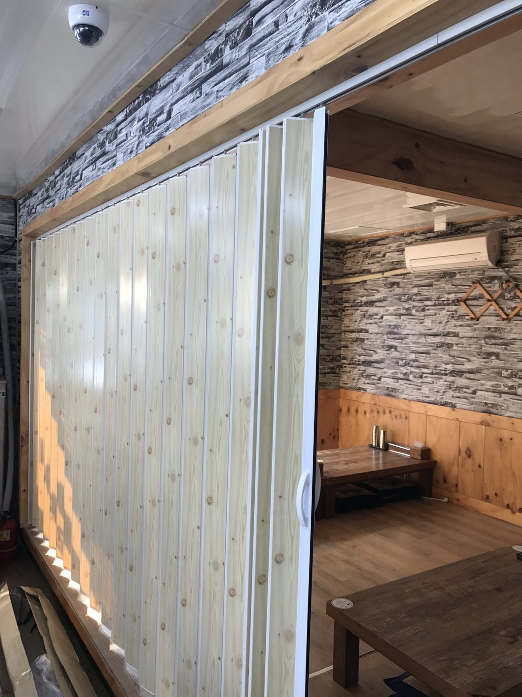
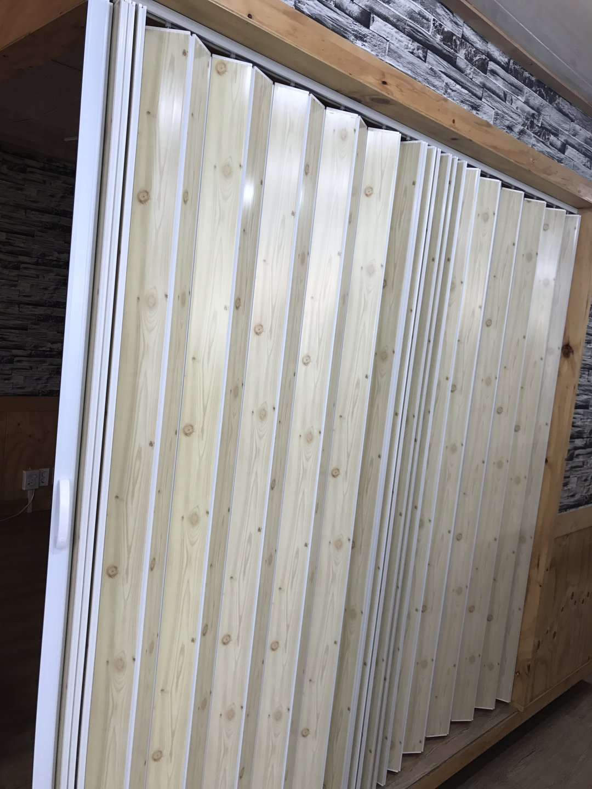

2017년 5월 31일 시공
울진 식당
홀딩도어(자바라) 칸막이 시공후기

울진에 있는 식당 홀을 나누는 공사입니다. 홀 한쪽을 좌식 방으로 쓰고 싶은데, 필요할 때는 다시 홀로 합쳐야 하는 자리였습니다.
사장님이 상담 때 하신 말씀은 이랬습니다. "방을 찾는 손님이 많은데, 방을 만들면 단체를 못 받습니다."
벽을 세우면 그날로 끝입니다
목공으로 벽을 세우고 문을 달면 차음도 좋고 인상도 완전한 방이 됩니다. 그런데 되돌릴 수가 없습니다.
식당은 손님 수가 매일 다릅니다. 평일 점심은 혼자 오시는 분이 많고 저녁 회식은 열댓 명이 한꺼번에 들어옵니다. 벽을 세우면 스무 명이 와도 그 자리는 계속 네 명짜리 방입니다.
몇 년 뒤 배치를 바꾸고 싶을 때 철거 공사를 또 해야 하고, 임차 매장이면 원상복구 부담까지 붙습니다. 그래서 필요할 때만 벽이 되는 쪽으로 갔습니다.

제일 먼저 정한 건 색이 아니라 바닥 레일이었습니다
홀딩도어는 바닥에 레일 홈을 파고 문 아래를 물려 잡는 방식과, 바닥에는 아무것도 두지 않고 상부 레일 하나로만 잡는 방식이 있습니다. 이 현장은 바닥 레일을 빼기로 먼저 정하고 나머지를 잡았습니다.
바닥 레일이 나쁜 건 아닙니다. 문 아래가 홈에 물려 있으니 좌우로 흔들리지 않고, 폭이 아주 넓거나 패널이 무거우면 하부가 잡혀 있는 쪽이 안정적입니다. 시공하는 입장에서도 상부 보강 부담이 줄어 편합니다.
그런데 식당에서는 세 가지가 걸립니다.
걸립니다. 바닥에 1~2cm 턱이 생깁니다. 쟁반을 든 직원, 카트, 어르신 손님, 뛰어다니는 아이. 하루에도 몇 번씩 걸립니다. 뜨거운 걸 들고 걸리면 그건 사고입니다.
청소가 안 됩니다. 홈에 국물이 들어가고 밥알이 낍니다. 폭이 좁아서 물걸레가 못 들어갑니다. 매일 닦는 바닥인데 그 한 줄만 못 닦으니 결국 냄새가 납니다.
문이 뻑뻑해집니다. 홈에 이물질이 쌓이면 하부 롤러가 타고 넘어가면서 저항이 생깁니다. 처음에는 부드럽던 문이 몇 달 뒤 안 움직입니다. "문이 고장 났다"고 연락 주시는 것의 상당수가 사실 이물질 문제입니다.

대신 위에서 무게를 전부 받아야 합니다
바닥 레일을 뺀다는 건 문 전체 무게를 상부 레일 하나가 받는다는 뜻입니다. 여기가 이 공사의 진짜 난이도입니다.
이 현장은 천장이 텍스였습니다. 상가와 식당에서 가장 흔한 마감입니다. 텍스는 마감재입니다. M바에 판이 얹혀 있는 구조라 하중을 못 받습니다. 여기에 레일을 직접 달면 처음 며칠은 멀쩡해 보이지만 한두 달 뒤 가운데가 처집니다.
처지면 문이 닫힐 때 위에 틈이 벌어지고 아래는 바닥에 끌립니다. 롤러도 한쪽만 닳습니다. 그때 부르시면 전부 뜯고 다시 해야 합니다.
그래서 상인방을 먼저 짰습니다
문 위에 목재 상인방을 짜 넣었습니다. 사진에서 문 위로 가로지르는 나무가 그것입니다. 이 부재를 양쪽 벽체 구조에 물려 고정하면 문 무게가 천장이 아니라 양쪽 벽으로 흘러갑니다. 레일은 텍스가 아니라 이 나무에 잡았습니다.
이 부재는 구조재이면서 마감이기도 합니다. 벽 아래쪽 편백과 같은 톤으로 골라서, 보강재를 덧댄 티가 안 나고 원래 있던 인방처럼 보입니다.
상부만 쓸 때는 챙길 게 늘어납니다. 레일 수평이 조금이라도 기울면 문이 저절로 한쪽으로 흘러갑니다. 열어놨는데 스르르 닫히거나 닫아놨는데 벌어집니다. 레이저 수평기로 잡고 양 끝을 여러 번 확인합니다. 롤러 배분도 고르게 물려야 하고, 접혔을 때 기대는 쪽 끝판은 벽에 단단히 고정합니다.

가운데서 갈라 양쪽으로 접었습니다
손잡이가 두 개 나란히 붙어 있는 건 중앙 양개로 갔기 때문입니다.
한쪽으로만 접으면 접힌 두께가 한 자리에 전부 몰립니다. 통로가 좁아지고 그 옆에 테이블을 못 놓습니다. 가운데서 나누면 두께가 절반씩 분산됩니다. 손님 한 분이 드나들 때는 가운데만 조금 벌리면 되니 조작도 가볍습니다.
하드웨어 관점에서도 유리합니다. 한쪽 끝에 무게가 전부 몰리지 않으니 그 지점 롤러와 고정부의 부담이 줄어듭니다.

색은 카탈로그가 아니라 그 집 벽을 보고 골랐습니다
홀딩도어 카탈로그를 펼치면 흰색이 제일 앞에 있습니다. 가장 무난하고 가장 많이 나갑니다. 그런데 이 현장은 우드 무늬로 갔습니다.
칸막이는 가구가 아니라 벽입니다. 면적이 벽 한 면입니다. 벽 한 면이 배경에서 튀면 그건 포인트가 아니라 사고입니다. 그래서 홀딩도어 색은 주변 벽에 얼마나 조용히 붙느냐로 정합니다.
이 집은 벽 아래쪽이 편백 널판이고 위쪽이 회색 스톤 무늬 벽지입니다. 눈높이 아래는 전부 나무색입니다. 여기에 흰 문을 5미터 세우면 그 면만 하얗게 뜹니다.
밝은 소나무 결에 옹이가 들어간 무늬로 가니 닫아두면 벽이 그냥 이어집니다. 무늬 방향도 세로로 골랐습니다. 홀딩도어는 패널이 세로로 접히니까 세로 결이면 접힘선이 무늬의 일부처럼 보입니다. 가로 무늬였으면 접힐 때마다 무늬가 끊깁니다.
다만 프레임과 손잡이는 화이트로 남겼습니다. 너무 잘 숨으면 손님이 문인 줄 모릅니다. 가운데 흰 선 두 줄이 "여기가 열리는 자리"를 조용히 알려줍니다. 손이 제일 많이 닿는 자리라 때가 보여야 닦게 된다는 실용적인 이유도 있습니다.
방음은 되지 않습니다 — 미리 말씀드립니다
칸막이 상담에서 가장 자주 어긋나는 기대가 "가려지면 안 들릴 것"이라는 생각입니다. 이 둘은 다릅니다.
시선은 얇은 판 한 장으로 막히지만 소리는 떨리지 않을 만큼 무거운 것이 있어야 막힙니다. 홀딩도어는 사람이 한 손으로 밀어야 하니 가벼워야 합니다. 게다가 접히려면 패널 사이에 이음매가 있어야 하고, 바닥 레일을 뺐으니 문 아래로도 약간의 틈이 남습니다. 홀딩도어를 잘 움직이게 만드는 조건이 그대로 소리가 새는 조건입니다.
대신 확실히 달라지는 건 있습니다. 시선이 끊기고 동선이 나뉩니다. 냄새와 연기는 크게 줄어듭니다. 소리도 옆 테이블 대화가 또렷하게 들리던 게 웅얼거리는 정도가 됩니다.
그래서 상담 때 이렇게 여쭤봅니다. "이 방에서 노래를 부르실 건가요?" 노래방 기계를 놓을 자리면 목공 벽에 방음문으로 가야 합니다. 식사하면서 이야기 나누는 정도면 홀딩도어로 충분합니다. 이 질문 하나로 대개 정리됩니다.
시공 정보
지역 : 경상북도 울진군 (식당)
공간 : 홀 ↔ 좌식 룸 칸막이
제품 : 우드 무늬 홀딩도어(자바라 도어) · 화이트 프레임/손잡이
포인트 : 바닥 레일 미시공(상부 레일 전용) / 텍스 천장 → 목재 상인방 보강 / 중앙 양개 접이 / 벽 마감과 톤 맞춘 우드 패널
작업 시간 : 1일
시공일 : 2017년 5월 31일
자주 묻는 질문
Q. 홀딩도어 바닥 레일은 꼭 있어야 하나요?
없어도 됩니다. 상부 레일만으로 시공합니다. 식당·카페처럼 사람과 카트가 자주 지나는 곳은 빼는 쪽을 권합니다.
Q. 바닥 레일 없이 하면 흔들리지 않나요?
상부 레일 수평과 롤러 배분을 제대로 잡으면 일상 사용에서 문제되지 않습니다. 다만 사람이 세게 부딪히는 자리나 폭이 극단적으로 넓은 경우는 하부 가이드를 검토합니다.
Q. 천장이 텍스인데 달 수 있나요?
텍스에 직접 달지 않습니다. 문 위에 목재 상인방을 짜 넣어 양쪽 벽체에 물리고 거기에 레일을 잡습니다. 이 작업이 별도 공정입니다.
Q. 홀딩도어로 방음이 되나요?
완전 차단은 안 됩니다. 옆방 대화가 웅얼거리는 정도로는 들립니다. 시선과 동선은 확실히 나뉘고 냄새와 연기는 크게 줄어듭니다.
Q. 임차 매장인데 원상복구가 되나요?
됩니다. 상부 레일과 상인방을 떼면 고정 자국만 남습니다. 목공 벽보다 훨씬 가볍습니다. 계약 조건은 미리 확인해 보시는 게 좋습니다.
Q. 접었을 때 자리를 많이 차지하나요?
패널 수에 비례합니다. 가운데서 양쪽으로 나눠 접으면 두께가 절반씩 분산됩니다. 실측 때 미리 계산해 알려드립니다.
Q. 문이 저절로 닫힙니다.
상부 레일 수평이 틀어졌을 가능성이 큽니다. 레일이 기울면 문이 낮은 쪽으로 흘러갑니다. 수평을 다시 잡으면 해결됩니다.
Q. 전동으로 할 수 있나요?
가능합니다. 다만 접히는 구조라 걸림에 취약하고 수동으로도 충분히 가벼워서, 일반 식당 칸막이에는 권하지 않습니다.
Q. 울진도 방문 시공 되나요?
됩니다. 울진, 영덕, 포항, 경주, 안동, 영주, 영천, 의성, 청송, 봉화 일대는 따솜커튼블라인드 이실장(010-2825-7275)이 직접 방문해 실측하고 시공합니다.
마무리
공간을 나누는 일은 "무엇을 나누고 싶은지"를 먼저 정하면 답이 빨리 나옵니다. 시선인지, 동선인지, 냄새인지, 소리인지.
이 현장의 조건은 두 개였습니다. 다시 합칠 수 있어야 한다, 그리고 바닥에 아무것도 없어야 한다. 이 두 개가 나오는 순간 목공 벽과 이동식 파티션은 후보에서 빠졌습니다.
홀딩도어는 완성된 뒤 보면 그냥 접히는 문입니다. 그런데 몇 년 쓰고 나면 만족도가 갈리는 지점은 무늬도 색도 아니고 대개 하드웨어입니다. 바닥에 턱이 있느냐, 위에서 제대로 받고 있느냐, 레일이 수평이냐.
비슷한 시공이 필요하신가요?
나눌 자리의 폭과 높이가 한 장에 다 나오게 찍은 사진 주시면 방문 전에 견적을 알려드립니다.
천장 마감(텍스인지 석고인지)이 같이 보이게 찍어주시면 더 정확합니다.